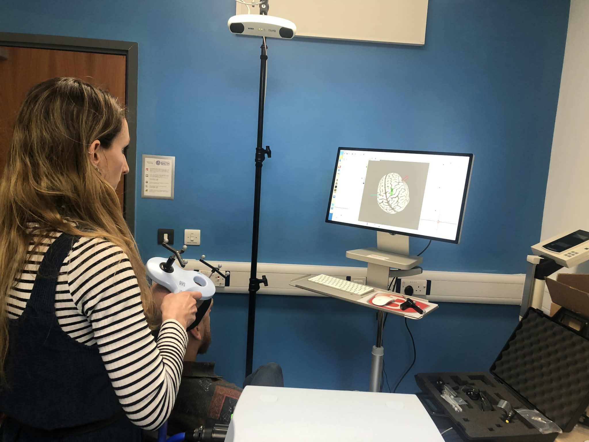

From October 2026
University of Bath
Incoming Postdoctoral Researcher, Department of Psychology
- Named postdoctoral researcher on the UKRI-funded, multi-institutional Rigour Hygiene Indicators for Research Assessment project.
Research, teaching, leadership and clinical experience.

Coordinate monthly methodological talks and research-development meetings across career stages.
Promote and organise open and reproducible research practices and training across the University.
Teaching, marking and seminars on modules Research Methods and Data Analysis I & II, Cognitive Neuropsychology, and Psychology of Pain.
I have worked professionally with people with a range of neurological, physical and cognitive conditions in care settings. These experiences have taught me to communicate sensitively and effectively with individuals with different support and communication needs, skills that are transferable to working with clinical populations in research settings.